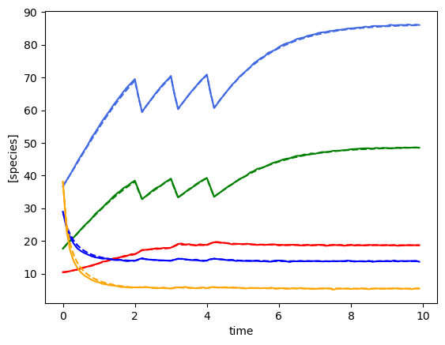

[1]:
from mimic.utilities.utilities import *
from mimic.model_infer import *
from mimic.model_simulate import *
import random
import pandas as pd
import numpy as np
import matplotlib.pyplot as plt
from scipy.integrate import odeint
Simulate some time course data and perform ridge regression as in Stein et al. 2013¶
We have coded up the Stein model and ridge regression without the perturbation term (Ridge1) and with a single perturbation (Ridge 2). Ridge regression is designed to cause shrinkage to prevent overfitting but it isn’t used for variable selection.
Five species, single time course¶
[3]:
# In this example n >> p and it it is basically same as standard regression
# We have to be careful as most of these gLV models are very weakly identifiable
set_all_seeds(1234)
# SETUP MODEL
# establish size of model
num_species = 5
num_metabolites = 0
# construct interaction matrix
# TODO do this programmatically
M = np.zeros((num_species, num_species))
np.fill_diagonal(M, [-0.05, -0.1, -0.15, -0.01, -0.2])
M[0, 2] = -0.025
M[1, 3] = 0.05
M[4, 0] = 0.02
# construct growth rates matrix
mu = np.random.lognormal(0.01, 0.5, num_species)
# instantiate simulator
simulator = sim_gMLV(num_species=num_species,
num_metabolites=num_metabolites,
M=M,
mu=mu)
simulator.print_parameters()
# PRODUCE SIMULATED RESULTS
# initial conditions
init_species = 10 * np.ones(num_species)
init_metabolites = 10 * np.ones(num_metabolites)
times = np.arange(0, 5, 0.1)
yobs, sobs, sy0, mu, M, _ = simulator.simulate(
times=times, sy0=np.hstack((init_species, init_metabolites)))
# add some gaussian noise
yobs = yobs + np.random.normal(loc=0, scale=0.1, size=yobs.shape)
sobs = sobs + np.random.normal(loc=0, scale=0.1, size=sobs.shape)
# plot simulation
# plot_gLV(yobs, sobs, times)
# PERFORM REGRESSION
# linearise
X, F = linearize_time_course_16S(yobs, times)
# print(f"n: {num_species * F.shape[0]}, p: {num_species + num_species ** 2}")
# get the best lambda/alpha values on a grid via cross validation
a0, a1 = fit_alpha_Ridge1(X, F, num_species=num_species, n_a0=20, n_a1=20)
# do final fit
mu_h, M_h = do_final_fit_Ridge1(X, F, num_species, a0, a1)
predictor = sim_gMLV(num_species=num_species,
num_metabolites=num_metabolites,
M=M_h,
mu=mu_h)
yobs_h, sobs_h, _, _, _, _ = predictor.simulate(
times=times, sy0=np.hstack((init_species, init_metabolites)))
# PLOT RESULTS
# plot comparison of simulated and predicted timeseries
plot_fit_gLV(yobs, yobs_h, times)
# this does the stem plots with orange crosses the actual parameters
compare_params(mu=(mu, mu_h), M=(M, M_h))
Model parameters:
Model: gMLV
num_species: 5
num_metabolites: 0
num_perturbations: 0
mu: [1.28 0.56 2.07 0.86 0.7 ]
M: [[-0.05 0. -0.03 0. 0. ]
[ 0. -0.1 0. 0.05 0. ]
[ 0. 0. -0.15 0. 0. ]
[ 0. 0. 0. -0.01 0. ]
[ 0.02 0. 0. 0. -0.2 ]]
beta: None
epsilon: []
Warning: Missing or None parameters for gMLV simulation. Using default values for: ['beta']
Using the following parameters for gMLV simulation: {'num_species': 5, 'num_metabolites': 0, 'num_perturbations': 0, 'mu': array([1.27853844, 0.55683415, 2.06752757, 0.86387608, 0.70448068]), 'M': array([[-0.05 , 0. , -0.025, 0. , 0. ],
[ 0. , -0.1 , 0. , 0.05 , 0. ],
[ 0. , 0. , -0.15 , 0. , 0. ],
[ 0. , 0. , 0. , -0.01 , 0. ],
[ 0.02 , 0. , 0. , 0. , -0.2 ]]), 'beta': None, 'epsilon': array([], shape=(5, 0), dtype=float64)}
minimum found: a0/a1/error: 0.06951927961775606 0.0003359818286283781 0.1040533270860066
unconstrained error : 0.10508759597525635
Warning: Missing or None parameters for gMLV simulation. Using default values for: ['beta']
Using the following parameters for gMLV simulation: {'num_species': 5, 'num_metabolites': 0, 'num_perturbations': 0, 'mu': [3.495273836287863, 1.3752426789429766, 3.774606135972948, 0.27596170020172694, 12.155875670993101], 'M': [[-0.28604332351676337, -0.11782285932386341, 0.07031626490180438, 0.08048988815279538, -0.04968188713638712], [-0.14717724623325015, -0.1776324486340454, 0.08720999680938764, 0.10206563770946256, 0.0054100583977499846], [0.2433628235243928, 0.10722167746340301, -0.47224150852925606, -0.07401246676605251, -0.13032133899815715], [0.0879928125899146, 0.05934756395757884, -0.0395818376537556, -0.048662490468695835, -0.014063858131853724], [-0.12368556630477316, -0.07890797235592878, -0.5039787404198957, 0.05371379775166251, -0.6769108529758052]], 'beta': None, 'epsilon': array([], shape=(5, 0), dtype=float64)}
mu_hat/mu:
[ 3.49527384 1.37524268 3.77460614 0.2759617 12.15587567]
[1.27853844 0.55683415 2.06752757 0.86387608 0.70448068]
M_hat/M:
[[-0.29 -0.12 0.07 0.08 -0.05]
[-0.15 -0.18 0.09 0.1 0.01]
[ 0.24 0.11 -0.47 -0.07 -0.13]
[ 0.09 0.06 -0.04 -0.05 -0.01]
[-0.12 -0.08 -0.5 0.05 -0.68]]
[[-0.05 0. -0.025 0. 0. ]
[ 0. -0.1 0. 0.05 0. ]
[ 0. 0. -0.15 0. 0. ]
[ 0. 0. 0. -0.01 0. ]
[ 0.02 0. 0. 0. -0.2 ]]


Five species, lower number of time points, multiple time course¶
[4]:
set_all_seeds(1234)
# SETUP MODEL
# establish size of model
num_species = 5
num_metabolites = 0
# construct interaction matrix
# TODO do this programmatically
M = np.zeros((num_species, num_species))
np.fill_diagonal(M, [-0.05, -0.1, -0.15, -0.01, -0.2])
M[0, 2] = -0.025
M[1, 3] = 0.05
M[4, 0] = 0.02
# construct growth rates matrix
mu = np.random.lognormal(0.01, 0.5, num_species)
# instantiate simulator
simulator = sim_gMLV(num_species=num_species,
num_metabolites=num_metabolites,
M=M,
mu=mu)
simulator.print_parameters()
# PRODUCE SIMULATED RESULTS
# data structures for results
ryobs = []
rsobs = []
ry0 = []
rs0 = []
X = np.array([], dtype=np.double).reshape(0, num_species+1)
F = np.array([], dtype=np.double).reshape(0, num_species)
num_timecourses = 3
times = np.arange(0, 5, 1)
for timecourse_idx in range(num_timecourses):
# initial conditions
init_species = np.random.uniform(low=10, high=50, size=num_species)
init_metabolites = np.random.uniform(low=10, high=50, size=num_metabolites)
yobs, sobs, sy0, mu, M, _ = simulator.simulate(
times=times, sy0=np.hstack((init_species, init_metabolites)))
# add some gaussian noise
yobs = yobs + np.random.normal(loc=0, scale=0.1, size=yobs.shape)
sobs = sobs + np.random.normal(loc=0, scale=0.1, size=sobs.shape)
# append results
ryobs.append(yobs)
rsobs.append(sobs)
ry0.append(init_species)
rs0.append(init_metabolites)
Xs, Fs = linearize_time_course_16S(yobs, times)
X = np.vstack([X, Xs])
F = np.vstack([F, Fs])
print(f"X: {X.shape}")
print(f"F: {F.shape}")
print(f"n: {num_species*F.shape[0]}, p: {num_species + num_species**2}")
# PERFORM REGRESSION
# get the best lambda/alpha values on a grid via cross validation
a0, a1 = fit_alpha_Ridge1(X, F, num_species=num_species, n_a0=20, n_a1=20)
# do final fit
mu_h, M_h = do_final_fit_Ridge1(X, F, num_species, a0=a0, a1=a1)
predictor = sim_gMLV(num_species=num_species,
num_metabolites=num_metabolites,
M=M_h,
mu=mu_h)
# PLOT RESULTS
# plot comparison of simulated and predicted timeseries
for timecourse_idx in range(num_timecourses):
yobs_h, sobs_h, _, _, _, _ = predictor.simulate(
times=times, sy0=np.hstack((ry0[timecourse_idx], rs0[timecourse_idx])))
plot_fit_gLV(ryobs[timecourse_idx], yobs_h, times)
# this does the stem plots with orange crosses the actual parameters
compare_params(mu=(mu, mu_h), M=(M, M_h))
# ANALYSE RESULTS
# do some bootstrapping to help with interpretation of parameters
# starred parameters are considered different to zero
do_bootstrapping(X, F, num_species, a0, a1, len(times), nboots=100)
Model parameters:
Model: gMLV
num_species: 5
num_metabolites: 0
num_perturbations: 0
mu: [1.28 0.56 2.07 0.86 0.7 ]
M: [[-0.05 0. -0.03 0. 0. ]
[ 0. -0.1 0. 0.05 0. ]
[ 0. 0. -0.15 0. 0. ]
[ 0. 0. 0. -0.01 0. ]
[ 0.02 0. 0. 0. -0.2 ]]
beta: None
epsilon: []
Warning: Missing or None parameters for gMLV simulation. Using default values for: ['beta']
Using the following parameters for gMLV simulation: {'num_species': 5, 'num_metabolites': 0, 'num_perturbations': 0, 'mu': array([1.27853844, 0.55683415, 2.06752757, 0.86387608, 0.70448068]), 'M': array([[-0.05 , 0. , -0.025, 0. , 0. ],
[ 0. , -0.1 , 0. , 0.05 , 0. ],
[ 0. , 0. , -0.15 , 0. , 0. ],
[ 0. , 0. , 0. , -0.01 , 0. ],
[ 0.02 , 0. , 0. , 0. , -0.2 ]]), 'beta': None, 'epsilon': array([], shape=(5, 0), dtype=float64)}
Warning: Missing or None parameters for gMLV simulation. Using default values for: ['beta']
Using the following parameters for gMLV simulation: {'num_species': 5, 'num_metabolites': 0, 'num_perturbations': 0, 'mu': array([1.27853844, 0.55683415, 2.06752757, 0.86387608, 0.70448068]), 'M': array([[-0.05 , 0. , -0.025, 0. , 0. ],
[ 0. , -0.1 , 0. , 0.05 , 0. ],
[ 0. , 0. , -0.15 , 0. , 0. ],
[ 0. , 0. , 0. , -0.01 , 0. ],
[ 0.02 , 0. , 0. , 0. , -0.2 ]]), 'beta': None, 'epsilon': array([], shape=(5, 0), dtype=float64)}
Warning: Missing or None parameters for gMLV simulation. Using default values for: ['beta']
Using the following parameters for gMLV simulation: {'num_species': 5, 'num_metabolites': 0, 'num_perturbations': 0, 'mu': array([1.27853844, 0.55683415, 2.06752757, 0.86387608, 0.70448068]), 'M': array([[-0.05 , 0. , -0.025, 0. , 0. ],
[ 0. , -0.1 , 0. , 0.05 , 0. ],
[ 0. , 0. , -0.15 , 0. , 0. ],
[ 0. , 0. , 0. , -0.01 , 0. ],
[ 0.02 , 0. , 0. , 0. , -0.2 ]]), 'beta': None, 'epsilon': array([], shape=(5, 0), dtype=float64)}
X: (12, 6)
F: (12, 5)
n: 60, p: 30
minimum found: a0/a1/error: 1.2742749857031335 3.792690190732254e-05 0.040851666358243804
unconstrained error : 0.07450427435040494
Warning: Missing or None parameters for gMLV simulation. Using default values for: ['beta']
Using the following parameters for gMLV simulation: {'num_species': 5, 'num_metabolites': 0, 'num_perturbations': 0, 'mu': [0.41552427943921244, 0.8869109545599364, 0.40526675820416297, 0.6406298041373665, 0.15583876969141913], 'M': [[-0.02235273814356689, -0.0003863009103320054, 0.00037998076102339917, 0.0007350323562556425, -0.006240995177609149], [-0.015578080277067863, -0.03152617030201347, 0.0016521403887853625, 0.010294125434172845, 0.0017847890452807034], [-0.0007139880453507574, -0.007286575271488957, -0.027814816673743265, 0.004130407977689072, -0.0036159532203242457], [0.004386227224810272, 0.0018242251775943729, -0.005198013755418974, -0.009205568395119986, 0.007372227177549854], [0.004303879975034176, -0.0024082429224774964, -0.00910239251701696, 0.002574175391212613, -0.04259917464073222]], 'beta': None, 'epsilon': array([], shape=(5, 0), dtype=float64)}
Warning: Missing or None parameters for gMLV simulation. Using default values for: ['beta']
Using the following parameters for gMLV simulation: {'num_species': 5, 'num_metabolites': 0, 'num_perturbations': 0, 'mu': [0.41552427943921244, 0.8869109545599364, 0.40526675820416297, 0.6406298041373665, 0.15583876969141913], 'M': [[-0.02235273814356689, -0.0003863009103320054, 0.00037998076102339917, 0.0007350323562556425, -0.006240995177609149], [-0.015578080277067863, -0.03152617030201347, 0.0016521403887853625, 0.010294125434172845, 0.0017847890452807034], [-0.0007139880453507574, -0.007286575271488957, -0.027814816673743265, 0.004130407977689072, -0.0036159532203242457], [0.004386227224810272, 0.0018242251775943729, -0.005198013755418974, -0.009205568395119986, 0.007372227177549854], [0.004303879975034176, -0.0024082429224774964, -0.00910239251701696, 0.002574175391212613, -0.04259917464073222]], 'beta': None, 'epsilon': array([], shape=(5, 0), dtype=float64)}
Warning: Missing or None parameters for gMLV simulation. Using default values for: ['beta']
Using the following parameters for gMLV simulation: {'num_species': 5, 'num_metabolites': 0, 'num_perturbations': 0, 'mu': [0.41552427943921244, 0.8869109545599364, 0.40526675820416297, 0.6406298041373665, 0.15583876969141913], 'M': [[-0.02235273814356689, -0.0003863009103320054, 0.00037998076102339917, 0.0007350323562556425, -0.006240995177609149], [-0.015578080277067863, -0.03152617030201347, 0.0016521403887853625, 0.010294125434172845, 0.0017847890452807034], [-0.0007139880453507574, -0.007286575271488957, -0.027814816673743265, 0.004130407977689072, -0.0036159532203242457], [0.004386227224810272, 0.0018242251775943729, -0.005198013755418974, -0.009205568395119986, 0.007372227177549854], [0.004303879975034176, -0.0024082429224774964, -0.00910239251701696, 0.002574175391212613, -0.04259917464073222]], 'beta': None, 'epsilon': array([], shape=(5, 0), dtype=float64)}
mu_hat/mu:
[0.41552428 0.88691095 0.40526676 0.6406298 0.15583877]
[1.27853844 0.55683415 2.06752757 0.86387608 0.70448068]
M_hat/M:
[[-0.02 -0. 0. 0. -0.01]
[-0.02 -0.03 0. 0.01 0. ]
[-0. -0.01 -0.03 0. -0. ]
[ 0. 0. -0.01 -0.01 0.01]
[ 0. -0. -0.01 0. -0.04]]
[[-0.05 0. -0.025 0. 0. ]
[ 0. -0.1 0. 0.05 0. ]
[ 0. 0. -0.15 0. 0. ]
[ 0. 0. 0. -0.01 0. ]
[ 0.02 0. 0. 0. -0.2 ]]
examining mu_i
0 -0.122 - 0.223
1 -0.125 - 0.821
2 -0.815 - 0.537
3 0.029 - 0.609 *
4 -0.858 - -0.023 *
examining Mij
1 (0, 0) -0.001 - 0.0
2 (0, 1) -0.003 - 0.0
3 (0, 2) -0.004 - 0.001
4 (0, 3) -0.001 - 0.002
5 (0, 4) -0.002 - 0.0
6 (1, 0) -0.001 - 0.0
7 (1, 1) -0.007 - 0.0
8 (1, 2) -0.009 - 0.001
9 (1, 3) -0.006 - 0.004
10 (1, 4) -0.004 - 0.001
11 (2, 0) -0.002 - 0.001
12 (2, 1) -0.01 - 0.003
13 (2, 2) -0.023 - 0.0
14 (2, 3) -0.001 - 0.013
15 (2, 4) -0.012 - 0.0
16 (3, 0) 0.0 - 0.0 *
17 (3, 1) -0.003 - 0.001
18 (3, 2) 0.0 - 0.004 *
19 (3, 3) -0.006 - 0.0
20 (3, 4) 0.0 - 0.002 *
21 (4, 0) -0.002 - 0.0
22 (4, 1) -0.006 - 0.004
23 (4, 2) -0.02 - -0.0 *
24 (4, 3) -0.0 - 0.014
25 (4, 4) -0.01 - -0.0 *


Five species, single time course including a perturbation¶
[5]:
set_all_seeds(1234)
# SETUP MODEL
# establish size of model
num_species = 5
# construct interaction matrix
# TODO do this programmatically
M = np.zeros((num_species, num_species))
np.fill_diagonal(M, [-0.05, -0.1, -0.15, -0.01, -0.2])
M[0, 2] = -0.025
M[1, 3] = 0.05
M[4, 0] = 0.02
# construct growth rates matrix
mu = np.random.lognormal(0.01, 0.5, num_species)
# construct perturbation matrix
num_perturbations = 1
epsilon = np.zeros([num_species, num_perturbations])
epsilon[:, 0] = [0, -1, 0, -1, 0]
def pert_fn(t):
if 2.0 <= t < 2.2 or 3.0 <= t < 3.2 or 4.0 <= t < 4.2:
return np.array([1])
else:
return np.array([0])
# instantiate simulator
simulator = sim_gLV(num_species=num_species,
num_perturbations=num_perturbations,
M=M,
mu=mu,
epsilon=epsilon)
simulator.print_parameters()
# PRODUCE SIMULATED RESULTS
# initial conditions
init_species = 10 * np.ones(num_species)
times = np.arange(0, 5, 0.1)
yobs, init_species, mu, M, _ = simulator.simulate(times=times, init_species=init_species, u=pert_fn)
# add some gaussian noise
yobs = yobs + np.random.normal(loc=0, scale=0.1, size=yobs.shape)
# plot simulation
plot_gLV(yobs, times)
Model parameters:
Model: gLV
num_species: 5
mu: [1.28 0.56 2.07 0.86 0.7 ]
M: [[-0.05 0. -0.03 0. 0. ]
[ 0. -0.1 0. 0.05 0. ]
[ 0. 0. -0.15 0. 0. ]
[ 0. 0. 0. -0.01 0. ]
[ 0.02 0. 0. 0. -0.2 ]]
epsilon: [[ 0.]
[-1.]
[ 0.]
[-1.]
[ 0.]]
Using the following parameters for gLV simulation: {'num_species': 5, 'mu': array([1.27853844, 0.55683415, 2.06752757, 0.86387608, 0.70448068]), 'M': array([[-0.05 , 0. , -0.025, 0. , 0. ],
[ 0. , -0.1 , 0. , 0.05 , 0. ],
[ 0. , 0. , -0.15 , 0. , 0. ],
[ 0. , 0. , 0. , -0.01 , 0. ],
[ 0.02 , 0. , 0. , 0. , -0.2 ]]), 'epsilon': array([[ 0.],
[-1.],
[ 0.],
[-1.],
[ 0.]])}

[6]:
# PERFORM REGRESSION
u = np.array([pert_fn(t)[0] for t in times])
u = u.astype(int)
print('perturbation:\n', u)
# linearise
X, F = linearize_time_course_16S_u(yobs, times, u)
print(f"n: {num_species * F.shape[0]}, p: {num_species + num_species ** 2}")
# get the best lambda/alpha values on a grid via cross validation
a0, a1, a2 = fit_alpha_Ridge2(
X, F, num_species=num_species, num_pert=1, n_a0=10, n_a1=10, n_a2=10)
# do final fit
mu_h, M_h, e_h = do_final_fit_Ridge2(
X, F, num_species=num_species, num_pert=1, a0=a0, a1=a1, a2=a2)
predictor = sim_gLV(num_species=num_species,
num_perturbations=num_perturbations,
M=M_h,
mu=mu_h,
epsilon=e_h,
)
yobs_h, _, _, _, _ = predictor.simulate(times=times, init_species=init_species, u=pert_fn)
# PLOT RESULTS
# plot comparison of simulated and predicted timeseries
plot_fit_gLV(yobs, yobs_h, times)
# this does the stem plots with orange crosses the actual parameters
compare_params(mu=(mu, mu_h), M=(M, M_h), e=(np.array([0, -1, 0, -1, 0]), e_h))
perturbation:
[0 0 0 0 0 0 0 0 0 0 0 0 0 0 0 0 0 0 0 0 1 1 0 0 0 0 0 0 0 0 1 1 0 0 0 0 0
0 0 0 1 1 0 0 0 0 0 0 0 0]
n: 245, p: 30
minimum found: a0/a1/a2/error: 0.01 1e-06 1e-06 0.10814280268684331
unconstrained error : 0.11073329941242945
Using the following parameters for gLV simulation: {'num_species': 5, 'mu': [3.5411525151892165, 0.07132788854493471, 7.159240378000905, 1.1548830750927708, 15.162442953233509], 'M': [[-0.1978488990767087, -0.06770486233703908, -0.018725399921347034, 0.050978189457053236, -0.07486080985398247], [-0.028695203218483175, -0.1175958443110258, 0.052338471943586144, 0.06119713740768114, 0.033216719844505464], [0.07304419473840096, 0.0002581169775652223, -0.5087087277644965, -0.005206752092147458, -0.22492679134981908], [0.01823922864839476, 0.02610775360126526, -0.024575694761484832, -0.02576324681834709, -0.0373106460143847], [-0.09758290045074763, -0.06214807073065136, -0.6989203012123228, 0.04645458413576269, -0.8231489493342359]], 'epsilon': [array([-0.01591961]), array([-0.96186409]), array([-0.04106974]), array([-0.9740322]), array([0.01459544])]}
mu_hat/mu:
[ 3.54115252 0.07132789 7.15924038 1.15488308 15.16244295]
[1.27853844 0.55683415 2.06752757 0.86387608 0.70448068]
M_hat/M:
[[-0.2 -0.07 -0.02 0.05 -0.07]
[-0.03 -0.12 0.05 0.06 0.03]
[ 0.07 0. -0.51 -0.01 -0.22]
[ 0.02 0.03 -0.02 -0.03 -0.04]
[-0.1 -0.06 -0.7 0.05 -0.82]]
[[-0.05 0. -0.025 0. 0. ]
[ 0. -0.1 0. 0.05 0. ]
[ 0. 0. -0.15 0. 0. ]
[ 0. 0. 0. -0.01 0. ]
[ 0.02 0. 0. 0. -0.2 ]]
e_hat/e:
[[-0.02]
[-0.96]
[-0.04]
[-0.97]
[ 0.01]]
[ 0 -1 0 -1 0]

